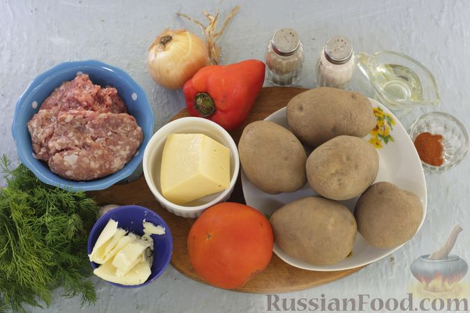
Шаг 1. Подготовьте все ингредиенты. Фарш используйте любой, на ваш вкус. У меня — свино-говяжий. Пряности регулируйте на своё усмотрение.
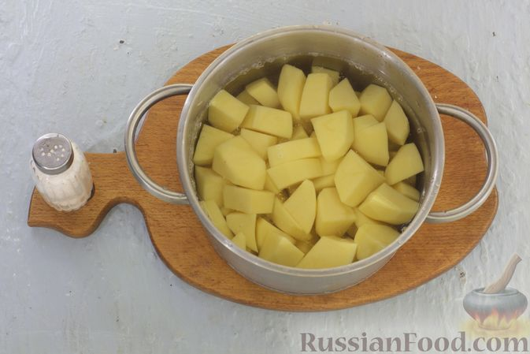
Шаг 2. Картофельные клубни очистите и нарежьте небольшими кусочками. Выложите картофель в кастрюлю с холодной подсоленной водой и поставьте на огонь. Варите до готовности. Время варки зависит от сорта и размера кусочков картофеля. Мне понадобилось 25 минут после закипания, чтобы картофель стал мягким.
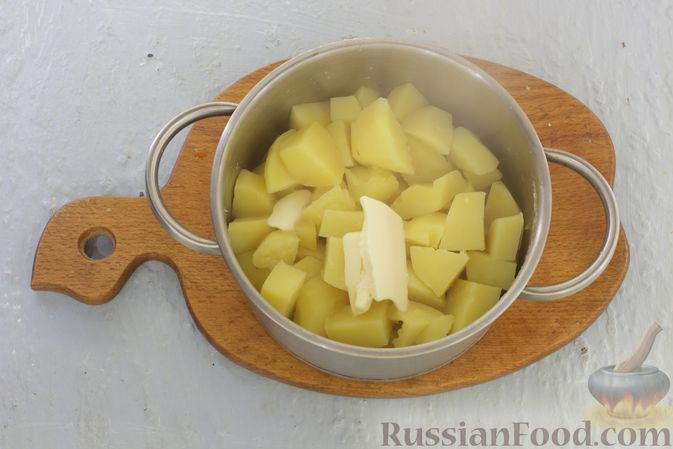
Шаг 3. Когда картошка будет готова, слейте отвар. Добавьте кусочек сливочного масла.
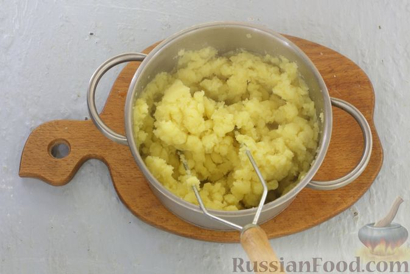
Шаг 4. Разомните картофель толкушкой до консистенции пюре.
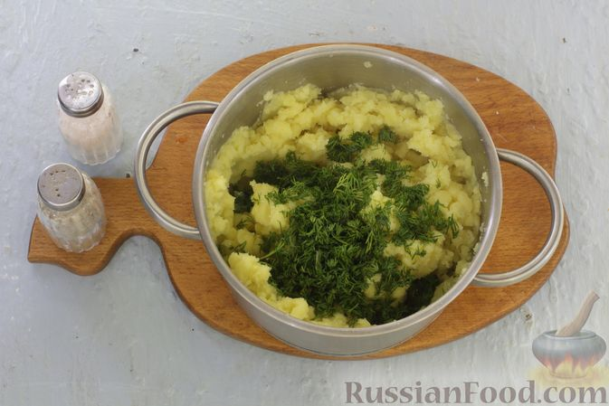
Шаг 5. Укроп промойте, обсушите салфеткой и измельчите. Нарезанный укроп добавьте в пюре. Приправьте солью и молотым чёрным перцем по вкусу. Хорошо перемешайте и немного остудите, чтобы было комфортно работать. Включите духовку для разогрева до 200 градусов.
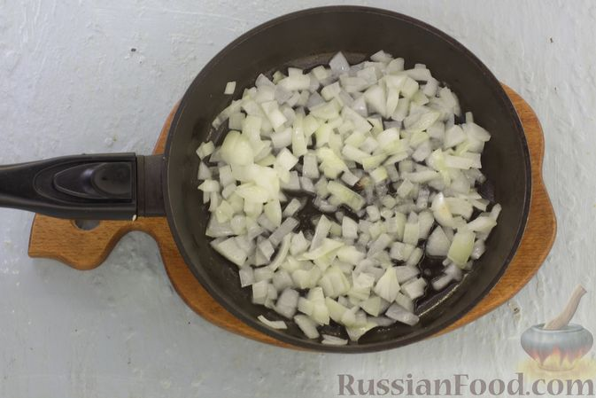
Шаг 6. Лук очистите и нарежьте кубиками. В сковороде разогрейте 20 мл растительного масла и обжарьте лук на небольшом огне, помешивая, 3-4 минуты.
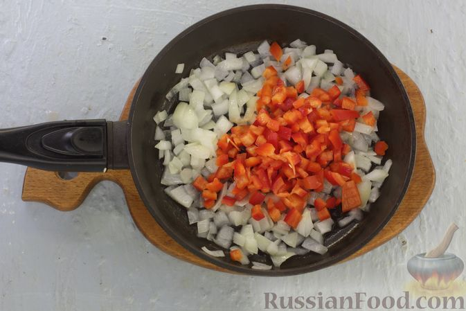
Шаг 7. Сладкий перец промойте и нарежьте кубиками. Добавьте к луку, перемешайте и обжаривайте на умеренном огне, помешивая, 2-3 минуты.
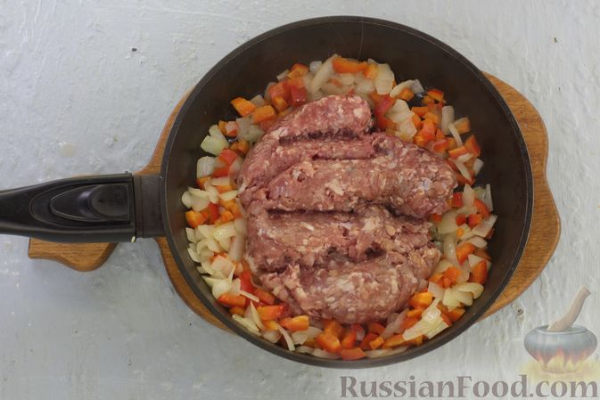
Шаг 8. К овощам добавьте мясной фарш и обжаривайте 2-4 минуты, часто помешивая лопаткой, чтобы разбить крупные комочки.
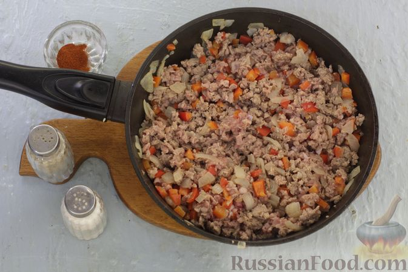
Шаг 9. По вкусу приправьте солью, молотым перцем и паприкой. Перемешайте и обжаривайте на небольшом огне ещё 4-5 минут.
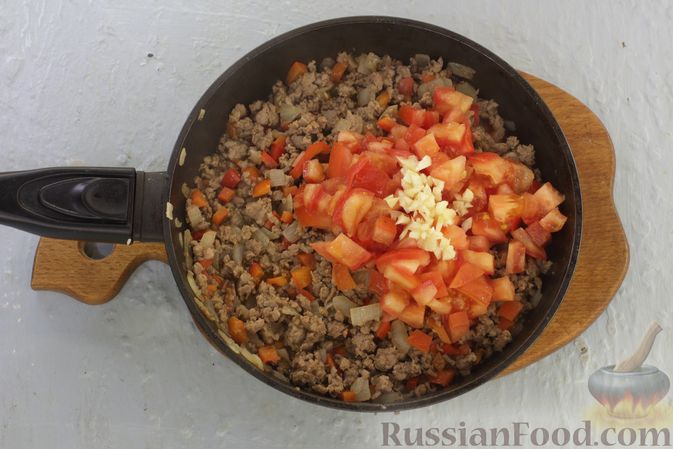
Шаг 10. Помидор нарежьте кубиками. Чеснок очистите и мелко нарежьте или пропустите через пресс. Помидор и чеснок добавьте к фаршу, перемешайте и тушите 4-5 минут на умеренном огне, помешивая лопаткой.
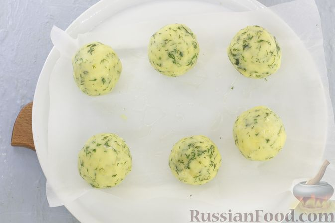
Шаг 11. Форму для запекания застелите пергаментом и смажьте оставшимся маслом. Руки смажьте растительным маслом, чтобы пюре не липло к рукам. Из пюре сформируйте 6 одинаковых колобков (вес одного шарика - 100-110 г). Выложите картофельные шарики на пергамент на расстоянии друг от друга.
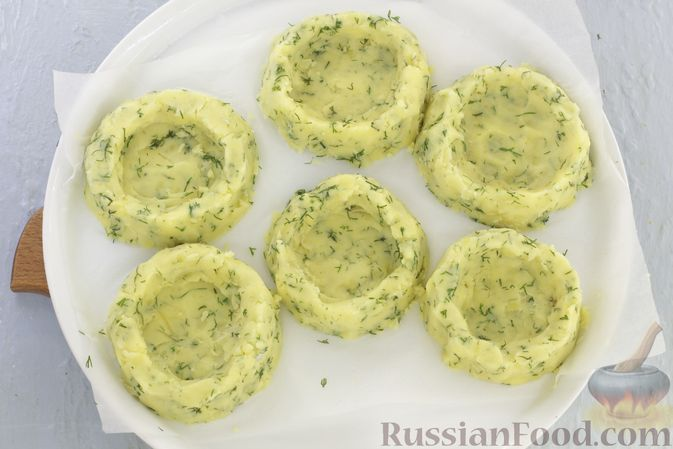
Шаг 12. В каждом шарике сделайте углубление удобным для вас способом. Я сформировала гнёзда руками, можно использовать дно подходящего стакана или рюмки.
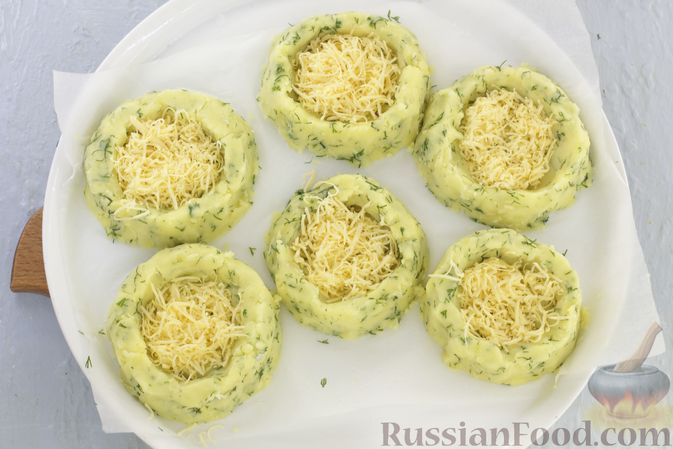
Шаг 13. Твёрдый сыр натрите на средней тёрке. Половину порции сыра распределите по всем заготовкам.
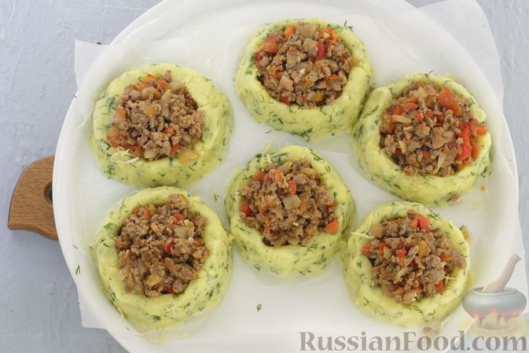
Шаг 14. В каждое картофельное гнёздышко добавьте порцию мясной начинки, формируя небольшую горку.
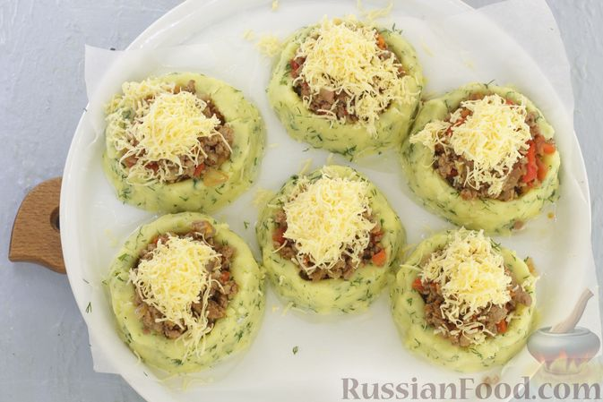
Шаг 15. Распределите оставшийся тёртый сыр. Отправьте картофельные гнёзда с фаршем, овощами и сыром в разогретую до 200 градусов духовку и запекайте 15-25 минут, до расплавления сыра. Время запекания зависит от мощности вашей духовки.
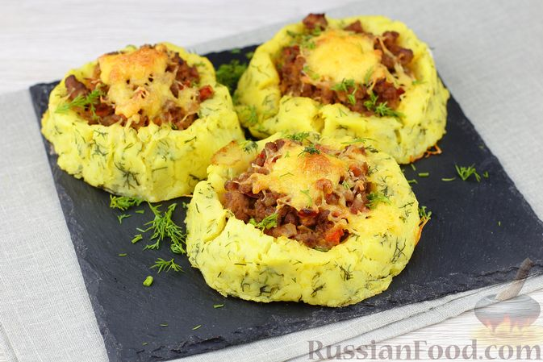
Шаг 16. Картофельные гнёзда с начинкой из мясного фарша, овощей и сыра готовы. Сразу подавайте к столу. Очень вкусно со сметаной или другим подходящим соусом.